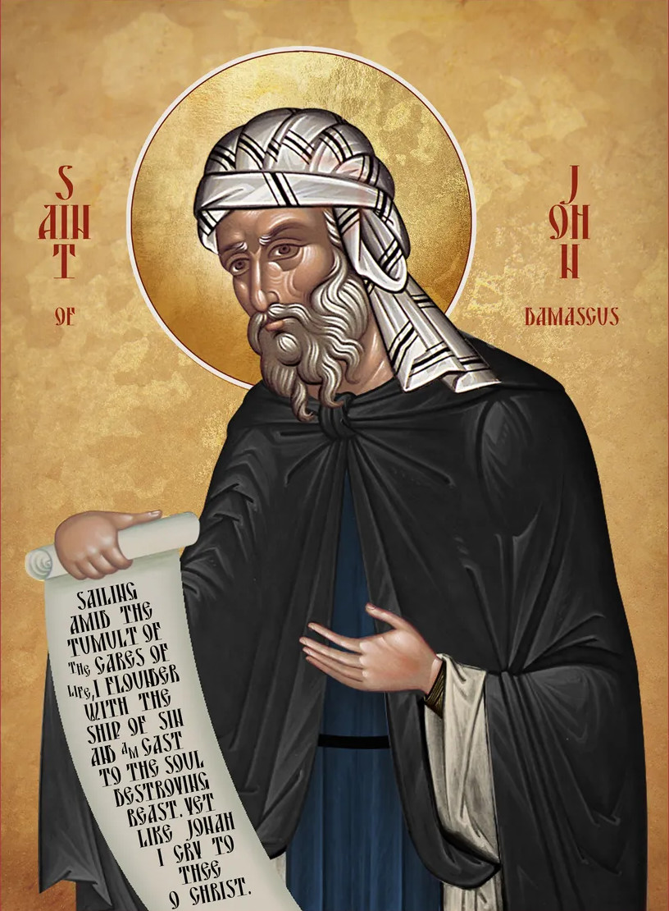

☦
Analogion
Jelenleg egy helyőrző lap, itt tárolom a szertartásokhoz tartozó struktúrákat, kottákat és hanganyagokat.
Tartalom:

Triszágion imák
Imaórák
Liturgia
| Feltámadási Apolytikion | Bizánci Kotta | Nyugati Kotta | Hang fájl |
|---|---|---|---|
| Összes Hang | ⬇ | ⬇ | ❌ |
| Első Hang | ⬇ | ⬇ | |
| Második Hang | ⬇ | ⬇ | |
| Harmadik Hang | ⬇ | ⬇ | |
| Negyedik Hang | ⬇ | ⬇ | |
| Plagális Első Hang | ⬇ | ⬇ | |
| Plagális Második Hang | ⬇ | ⬇ | |
| Plagális Harmadik Hang | ⬇ | ⬇ | |
| Plagális Negyedik Hang | ⬇ | ⬇ |
Vecsernye
Hajnali Istentisztelet
Kis Könyörgő Kánon az Istenszülőnek (Paraklisz)
Nagy Könyörgő Kánon az Istenszülőnek (Paraklisz)
Keresztelkedés (és bérmálás)
Bérmálás
Triszágion szertartás: megemlékezés az elhunytakról
Esküvő
☦
Egyházmegyék Magyarországon
Konstantinápolyi Ökumenikus Patriarchátus
Magyar Ortodox Egyházmegye - Moszkvai Patriarchátus
Budai Szerb Ortodox Egyházmegye
Bolgár Ortodox Egyházmegye
Román Ortodox Egyházmegye